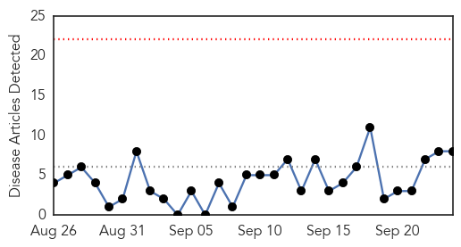
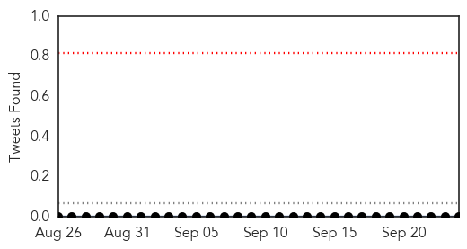
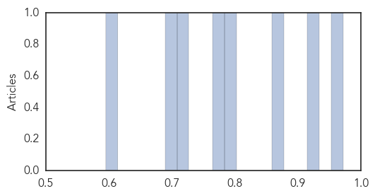
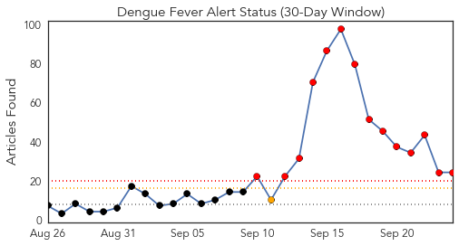
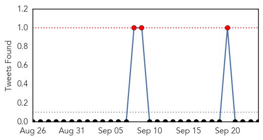
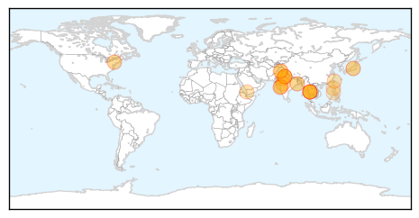
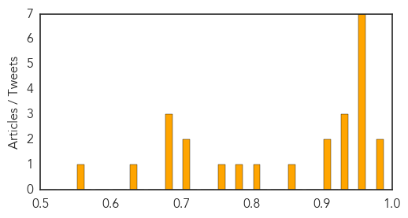

Meningitis
30-Day Web Trend
0 alerts, 0 warnings

30-Day Twitter Trend
0 alerts, 0 warnings

Article Locations

Article Confidences
Top Articles:
- 0.971
- Viral meningitis prompts school responses in Maine
- 0.926
- Soft Cheeses Eyed as Possible Source of Multi-State Listeria Outbreak
- 0.876
- Minnesota hit by the salmonella outbreak
- 0.787
- 7 cases of viral meningitis confirmed in Maine schools
- 0.767
- Warning issued over deadly strain of meningitis after 88% rise in cases
- 0.710
- Central Oregon counties divided on STD prevention measure; Providers can prescribe meds for patients’ sexual partners
- 0.691
- Warning issued over deadly strain of meningitis after a rise in the UK
- 0.595
- 21 Idahoans sickened in cucumber salmonella outbreak
Top Tweets:
-
No tweets found for Sep 24, 2015
Dengue Fever
30-Day Web Trend
14 alerts, 1 warnings

30-Day Twitter Trend
0 alerts, 0 warnings

Article Locations
Article Confidences
Top Articles:
- 0.988
- Hospitals defer surgeries, divert staff to fever wards
- 0.982
- One more succumbs to swine flu, toll 6
- 0.974
- Taiwan suffers deadliest ever dengue outbreak
- 0.973
- Taiwan suffers deadliest ever dengue outbreak
- 0.971
- Taiwan suffers deadliest-ever dengue outbreak, with record high of 42 people dead, East Asia News & Top Stories
- 0.968
- Nadda claims adequate arrangements in place to tackle dengue cases
- 0.968
- Kamrup(M) records over 100 dengue cases
- 0.968
- Taiwan suffers deadliest ever dengue outbreak
- 0.952
- Dengue sting gets deadlier, 11 more ill
- 0.949
- Nadda claims adequate arrangements in place to tackle dengue cases , AniNews.in
- 0.947
- Two more tested dengue positive, toll 27
- 0.934
- 2 more deaths take dengue toll to 28
- 0.922
- WHO steps up response in Yemen as health facilities continue to shut down
- 0.903
- Number of dengue fever cases set to break 2014 level: CDC
- 0.857
- Provinces asked to redouble efforts for control of dengue fever
- 0.824
- More than 400 dengue cases recorded in Laoag City
- 0.797
- Dengue bares its killer fangs
- 0.767
- State for ELISA dengue test
- 0.722
- Anil Kapoor, Juhi Chawla served notice for dengue breeding spots in their homes
- 0.701
- Boy dies of dengue
- 0.687
- PH gov’t suspects new rebel group abducted foreigners, Filipina
- 0.687
- Amid corruption probe, Najib travels to London, NY
- 0.687
- CNN Philippines retrenches workers
- 0.632
- Dengue knock on rich doors
- 0.563
- Health teams visit Badali village after 11-year-old boy dies of Japanese Encephalitis
Top Tweets:
-
No tweets found for Sep 24, 2015